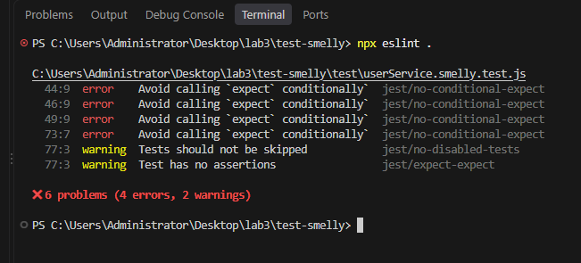
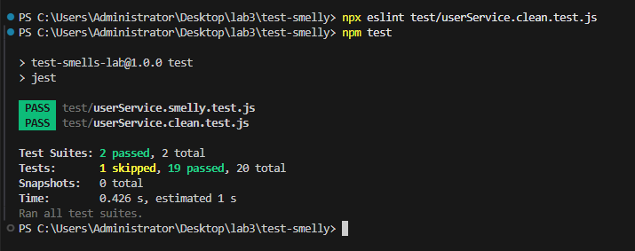

Este relatório descreve a análise e a refatoração da suíte de testes do projeto test-smelly, um serviço de gerenciamento de usuários escrito com test smells de propósito. Os testes refatorados estão em test/userService.clean.test.js; o original não foi alterado.
Repositório: https://github.com/Cardosoooo/test-smelly
Na leitura de test/userService.smelly.test.js encontrei cinco smells; os três mais graves estão abaixo. Para confirmar os riscos, introduzi defeitos de propósito em src/userService.js, um de cada vez, e observei quais testes falhavam (Tabela 1).
Onde: “deve desativar usuários se eles não forem administradores” (linhas 33 a 52). Por que é um smell: o teste percorre uma lista com for e usa if/else para escolher qual expect executar. Um bom teste tem um caminho só; aqui é preciso simular o laço para saber o que está sendo verificado.
Risco: a condição usa user.isAdmin, um valor produzido pelo próprio código testado, ou seja, o teste pergunta ao sistema o que deve esperar. Quando fiz o createUser ignorar o parâmetro isAdmin, o administrador passou a ser tratado como usuário comum, caiu no if, foi desativado e o teste continuou passando.
Onde: “deve falhar ao criar usuário menor de idade” (linhas 66 a 75). Por que é um smell: o único expect está dentro do catch. Se a exceção não for lançada, nenhuma asserção roda e o Jest aprova o teste.
Risco: falso positivo. Removi a validação de idade (if (idade < 18)) e o teste continuou verde, embora a regra de negócio tivesse deixado de existir. É o mesmo caso dos mutantes sobreviventes do trabalho anterior: a linha está coberta, mas a regra não está protegida.
Onde: “deve criar e buscar um usuário corretamente” (linhas 18 a 31). Por que é um smell: um único teste exercita dois comportamentos, createUser e getUserById, com duas ações e as asserções das duas misturadas. O “e” no nome já denuncia isso.
Risco: quando o teste falha, o nome não diz qual método quebrou, e o primeiro expect que falha esconde o resultado dos seguintes. As verificações também ficam rasas: o id só é checado com toBeDefined, e e-mail e idade nunca são conferidos.
Outros smells encontrados: Teste Frágil, no teste do relatório, que compara a linha exata (ID: ..., Nome: ..., Status: ...) e quebrou quando mudei só a pontuação, sem mudar nenhum dado; e Teste Ignorado e Vazio, o test.skip com corpo vazio e um TODO, que deixa o caso da lista vazia sem teste.
src/userService.js, uma por vez, e o efeito em cada suíte.| Mudança no código | Suíte original (smelly) | Suíte refatorada (clean) |
|---|---|---|
createUser ignora o parâmetro isAdmin | passa: defeito não detectado | 2 testes falham |
| Validação de idade removida | passa: defeito não detectado | 1 teste falha |
| Só a pontuação do relatório muda (não é defeito) | 1 teste falha: alarme falso | passa |
Escolhi o teste de desativação, o mais problemático da suíte: ele concentra três dos quatro erros apontados pelo ESLint e, como visto em 2.1, não detecta um defeito real.
test('deve desativar usuários se eles não forem administradores', () => {
const usuarioComum = userService.createUser('Comum', 'comum@teste.com', 30);
const usuarioAdmin = userService.createUser('Admin', 'admin@teste.com', 40, true);
const todosOsUsuarios = [usuarioComum, usuarioAdmin];
// O teste tem um loop e um if, tornando-o complexo e menos claro.
for (const user of todosOsUsuarios) {
const resultado = userService.deactivateUser(user.id);
if (!user.isAdmin) {
// Este expect só roda para o usuário comum.
expect(resultado).toBe(true);
const usuarioAtualizado = userService.getUserById(user.id);
expect(usuarioAtualizado.status).toBe('inativo');
} else {
// E este só roda para o admin.
expect(resultado).toBe(false);
}
}
});
deactivateUser tem mais dois (item 4). test('retorna true ao desativar um usuário comum', () => {
// Arrange
const usuarioComum = criarUsuarioComum();
// Act
const resultado = userService.deactivateUser(usuarioComum.id);
// Assert
expect(resultado).toBe(true);
});
test('muda o status do usuário comum para inativo', () => {
// Arrange
const usuarioComum = criarUsuarioComum();
// Act
userService.deactivateUser(usuarioComum.id);
// Assert
expect(userService.getUserById(usuarioComum.id).status).toBe('inativo');
});
test('retorna false ao tentar desativar um administrador', () => {
// Arrange
const usuarioAdmin = criarUsuarioAdmin();
// Act
const resultado = userService.deactivateUser(usuarioAdmin.id);
// Assert
expect(resultado).toBe(false);
});
Decisões tomadas:
for nem if. Usuário comum e administrador viraram testes separados, com o resultado esperado escrito no próprio teste (true ou false). O teste não pergunta mais ao sistema o que esperar, e o defeito do isAdmin passou a ser detectado.deactivateUser e a mudança de status ficaram em testes diferentes, com nomes que dizem o que é verificado. Se um falhar, o nome já mostra o que quebrou.criarUsuarioComum() e criarUsuarioAdmin() escondem nome, e-mail e idade, que não importam aqui.Nos outros smells, o Teste Ansioso virou testes separados de createUser e getUserById; o try/catch virou expect(() => ...).toThrow('O usuário deve ser maior de idade.'), que falha se a exceção não vier; o teste do relatório passou a verificar só que os nomes e o status aparecem, sem depender da pontuação; e o teste ignorado foi implementado. Ao todo, os quatro testes originais, mais o ignorado, viraram 15 testes curtos.
Configurei o ESLint com o .eslintrc.json do enunciado, na versão 8.57, porque o ESLint 9 ignora esse formato de configuração. Também criei um .eslintignore para não analisar a pasta coverage/. A Figura 1 mostra a primeira execução, antes de criar o arquivo limpo.

npx eslint .: 4 erros e 2 avisos no arquivo smelly.Os apontamentos batem com a análise manual. As linhas 44, 46 e 49 (jest/no-conditional-expect) são os expect dentro do if/else (2.1). A linha 73, com a mesma regra, é o expect dentro do catch (2.2), já que o catch também é um caminho que pode não rodar. A linha 77 é o test.skip vazio, com dois avisos: jest/no-disabled-tests e jest/expect-expect. Este último vem do plugin:jest/recommended, e não das regras extras do enunciado.
Em um segundo, a ferramenta achou, com arquivo e linha, três dos cinco smells da leitura manual, e pode rodar a cada commit ou no CI para impedir que eles voltem. Ela não apontou o Teste Ansioso nem o Teste Frágil, que dependem de entender a intenção do teste; para esses, a revisão manual continua necessária. Depois da refatoração, o ESLint não aponta nada no arquivo novo e a suíte completa passa (Figura 2). O único teste ignorado é o do arquivo original, que não foi alterado.

npm test com 19 testes aprovados.A suíte original passava inteira, mas deixava defeitos reais passarem e quebrava com uma mudança que não era defeito: teste verde, sozinho, não garante nada. Testes limpos, com um comportamento por teste, padrão AAA, sem lógica condicional e verificando comportamento em vez de formato, fazem cada falha apontar para um problema concreto e servem como documentação do sistema. A análise estática complementa esse cuidado, transformando parte das boas práticas em regra automática, que roda sempre e não depende da atenção de quem revisa. Juntas, as duas práticas deixam os testes mais baratos de manter e dão confiança para mudar o código, o que sustenta o projeto ao longo do tempo.